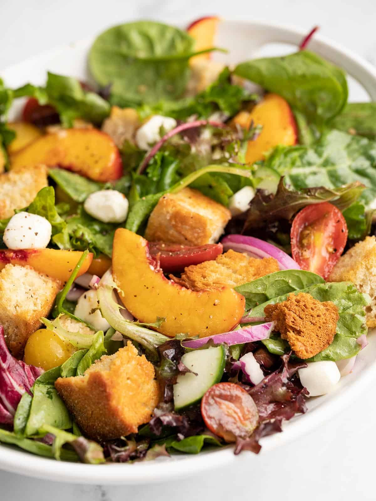

Panzanella

Description
A Tuscan salad borrowed from BudgetBytes, consisting of day-old bread,
some vegetables, and summer fruit.
The perfect salad for using up what you have before they go to waste!
Ingredients
- 3 cups stale bread, cubed
- 1/4 c. olive oil, divided
- 1 pt. cherry tomatoes
- 1 nectarine
- 1 cucumber, seeded
- 1/2 red onion
- 10 oz. baby spring mix
- 4 oz. mozzarella pearls
- 1 t. kosher salt
- 1 T. red wine vingear
Directions
- Preheat the oven to 300 degrees Fahrenheit. Line a sheet pan with
parchment paper. Slice the bread into 2 x 2-in. cubes and place in the sheet pan. Drizzle
with 1 T. of olive oil and toss to combine. Bake until toasted, about 20 min.
- In the meantime, wash all of the produce. Halve the cherry tomatoes.
Cut the cucumber length-wise then seed both, then halve both and slice into rounds. Slice
the nectarine into 1/2" thick slices. Slice the red onion in 1/4" thick half-moons.
- When the bread is golden brown, remove from the oven and let cool.
- Add the toasted bread to a large bowl and top with salad greens, followed
by the rest of the produce.
- Add the remaining olive oil, vinegar, and salad to a small container
with a tight-fitting lid. Close and shake the ingredients until combined. Toss the salad
in the dressing.
- Let the salad sit in the dressing for at least an hour so the bread
can absorb the dressing's flavour. Enjoy!